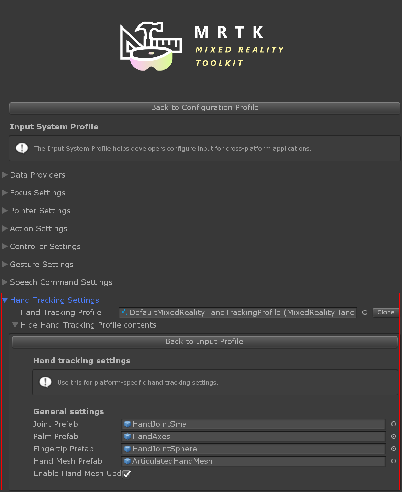

Hand Tracking Profile
The Hand Tracking profile is found under the Input System profile. It contains settings for customizing hand representation.
Joint Prefabs
Joint prefabs are visualized using simple prefabs. The Palm and Index Finger joints are of special importance and have their own prefab, while all other joints share the same prefab.
By default the hand joint prefabs are simple geometric primitives. These can be replaced if desired. If no prefab is specified at all, empty GameObjects are created instead.
| Warning: Avoid using complex scripts or expensive rendering in joint prefabs, since joint objects are transformed on every frame and can have significant performance cost! |
|---|

Hand Mesh Prefab
The hand mesh is used if fully defined mesh data is provided by the hand tracking device. The mesh renderable in the prefab is replaced by data from the device, so a dummy mesh such as a cube is sufficient. The material of the prefab is used for the hand mesh.

Hand mesh display can have a noticeable performance impact, for this reason it can be disabled entirely using the Enable Hand Mesh Updates option.
Scripting
Position and rotation can be requested from the input system for each individual hand joint as a MixedRealityPose.
Alternatively we also have access to GameObjects that follow the joints. This can be useful if another GameObject should track a joint continuously.
Note: Joint object are destroyed when hand tracking is lost! Make sure that any scripts using the joint object handle the null case gracefully to avoid errors! |
|---|
Available joints are listed in the TrackedHandJoint enum.
Accessing a given Hand Controller
A specific hand controller is often available, e.g. when handling input events. In this case the joint data can be requested directly from the device, using the IMixedRealityHand interface.
Polling Joint Pose from Controller
The TryGetJoint function returns false if the requested joint is not available for some reason. In that case the resulting pose will be MixedRealityPose.ZeroIdentity.
public void OnSourceDetected(SourceStateEventData eventData)
{
var hand = eventData.Controller as IMixedRealityHand;
if (hand != null)
{
if (hand.TryGetJoint(TrackedHandJoint.IndexTip, out MixedRealityPose jointPose)
{
// ...
}
}
}
Joint Transform from Hand Visualizer
Joint objects can be requested from the controller visualizer.
public void OnSourceDetected(SourceStateEventData eventData)
{
var handVisualizer = eventData.Controller.Visualizer as IMixedRealityHandVisualizer;
if (handVisualizer != null)
{
if (handVisualizer.TryGetJointTransform(TrackedHandJoint.IndexTip, out Transform jointTransform)
{
// ...
}
}
}
Simplified joint data access
If no specific controller is given then utility classes are provided for convenient access to hand joint data. These functions request joint data from the first available hand device currently tracked.
Polling Joint Pose from HandJointUtils
HandJointUtils is a static class that queries the first active hand device.
if (HandJointUtils.TryGetJointPose(TrackedHandJoint.IndexTip, Handedness.Right, out MixedRealityPose pose))
{
// ...
}
Joint Transform from Hand Joint Service
IMixedRealityHandJointService keeps a persistent set of GameObjects for tracking joints.
var handJointService = MixedRealityToolkit.Instance.GetService<IMixedRealityHandJointService>();
if (handJointService != null)
{
Transform jointTransform = handJointService.RequestJointTransform(TrackedHandJoint.IndexTip, Handedness.Right);
// ...
}
}
Hand Tracking Events
The input system provides events as well, if polling data from controllers directly is not desirable.
Joint Events
IMixedRealityHandJointHandler handles updates of joint positions.
public class MyHandJointEventHandler : IMixedRealityHandJointHandler
{
public Handedness myHandedness;
void IMixedRealityHandJointHandler.OnHandJointsUpdated(InputEventData<IDictionary<TrackedHandJoint, MixedRealityPose>> eventData)
{
if (eventData.Handedness == myHandedness)
{
if (eventData.InputData.TryGetValue(TrackedHandJoint.IndexTip, out MixedRealityPose pose))
{
// ...
}
}
}
}
Mesh Events
IMixedRealityHandMeshHandler handles changes of the articulated hand mesh.
Note that hand meshes are not enabled by default.
public class MyHandMeshEventHandler : IMixedRealityHandMeshHandler
{
public Handedness myHandedness;
public Mesh myMesh;
public void OnHandMeshUpdated(InputEventData<HandMeshInfo> eventData)
{
if (eventData.Handedness == myHandedness)
{
myMesh.vertices = eventData.InputData.vertices;
myMesh.normals = eventData.InputData.normals;
myMesh.triangles = eventData.InputData.triangles;
if (eventData.InputData.uvs != null && eventData.InputData.uvs.Length > 0)
{
myMesh.uv = eventData.InputData.uvs;
}
// ...
}
}
}